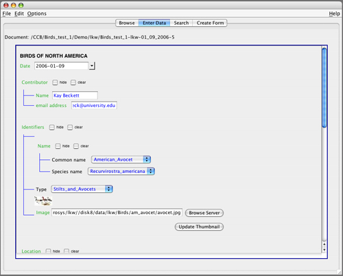

Brief Demo
Let's first get familiar with the NeuroSys environment, and then look at a sample
a entry form for entering information about birds. The data in the bird database include
images, journal articles (PDFs), and vocalizations (WAV files), as well as
contributor name and contact information and the states in which a bird is found.
The NeuroSys Environment
The image below shows the java client window after logging in to the bird database. There
are separate tabs for the four different ways you can interact with data: Browse,
Enter Data, Search, and Create Form.
Browse
is a read-only view of your data form.
Enter Data
allows you to change data in an existing data form.
Search
allows you to query data fields in all of the existing forms.
Create Form
allows you to modify the data form itself.

By selecting (via single click) a bird name in the list, and then clicking the
Enter Data button at the bottom of the
window, you will be able to view the record in data entry format, as shown here:
